조경기사 (2022-03-05 기출문제)
1과목: 조경사
1. 다음 조선시대 사직단(社稷壇)에 관한 설명 중 틀린 것은?
- 동양의 우주관에 의해 궁궐 왼쪽에 사직단을 두었다.
- 토신에 제사지내는 사단(社壇)을 사직단에서 동쪽에 두었다.
- 곡식의 신에 제사지내는 직단(稷壇)을 사직단에서 서쪽에 두었다.
- 두 사직의 외각 기단부 사방에 홍살문을 두었다.
(정답률: 54%)

2. 중국 조경의 특징 중 태호석을 고를 때 주요 고려 요소가 아닌 것은?
- 누(漏)
- 경(景)
- 수(瘦)
- 추(皺)
(정답률: 77%)
3. 르네상스시대 바로크식 정원의 특징과 가장 관계가 먼 것은?
- 동굴(grotto)
- 토피아리(topiary)
- 격자울타리(trellis)
- 비밀분천(secret fountain)
(정답률: 69%)
4. 인도의 타지마할(Taj-mahal)은 어떤 목적으로 만든 건축물인가?
- 왕궁(王宮)
- 분묘건축(墳墓建築)
- 서민의 주택(住宅)
- 귀족의 별장(別莊)
(정답률: 83%)
5. 다음 중 스페인 알함브라 궁전의 「사자의 중정(court of lions)」과 같이 4등분한 수로가 의미하는 바는?
- 동서남북을 의미
- 수로의 편리성을 의미
- 동일한 모양의 땅 가름을 의미
- 파라다이스 가든의 네 강을 의미
(정답률: 75%)
6. 동사강목(東史綱目)에 “궁성의 남족에 못을 파고 20여리 밖에서 물을 끌어 들이고 사방의 언덕에 버드나무를 심고, 못 속에 섬을 만들었다.”는 기록이 나타난 시기는?
- 백제의 진사왕
- 백제의 무왕
- 신라의 경덕왕
- 신라의 문무왕
(정답률: 77%)
7. 일본 교토에 위치한 실정(室町, 무로마치)시대의 전통정원 가운데 은사탄(銀砂灘, 인공모래펄), 향월대(向月臺) 등의 경물이 있는곳은?
- 금각사
- 은각사
- 대선원
- 용안사
(정답률: 59%)
8. 한국정원의 특징 중 가장 대표적인 것은?
- 산수경관의 축경화와 조화미
- 산수경관의 실경화(實景化 )와 조화미
- 산수경관의 모조화와 강한 대비성
- 산수경관의 축의화(축의화)와 대칭성
(정답률: 72%)
9. 일반적인 조선시대 상류주택의 정원 중 바깥주인의 거처 및 접객공간이며, 조경수식이 가장 화려한 공간은?
- 안마당
- 별당마당
- 사랑마당
- 사당마당
(정답률: 75%)
10. 한국조경에는 석교(石橋), 목교(木橋), 징검다리, 외나무다리 등 다양한 형태가 설치되었는데, 이 중 외나무다리가 설치된 조경 유적은?
- 경주 안압지(雁鴨池)
- 경복궁 향원지(香源池)
- 남원 광한루지(廣寒樓池)
- 전남 담양의 소쇄원(瀟灑園)
(정답률: 69%)
11. 다음 중 일본조경의 시초라 할 수 있는 사실과 가장 거리가 먼 것은?
- 일본서기(日本書紀)
- 용안사 석정(龍安寺 石庭)
- 수미산(須彌山)과 오교(吳橋)
- 백제인 노자공(路子工)
(정답률: 68%)
12. 서양조경사를 통시적으로 보아 역사적으로 나타난 정원양식의 발달 순서로 적합한 것은?
- 자연풍경식→노단건축식→평면기하학식
- 노단건축식→평면기하학식→자연풍경식
- 평면기하학식→노단건축식→자연풍경식
- 노단건축식→자연풍경식→평면기하학식
(정답률: 69%)
13. 프랑스 베르사유궁원에서 사용된 “파르테르(Parterre)”란 명칭으로 가장 적당한 것은?
- 분수
- 화단
- 연못
- 산책로
(정답률: 73%)
14. 영국에 프랑스식 정원 양식을 도입하는데 공헌한 사람들 중 관계없는 인물은?
- 르노트르(Andre Le Notre)
- 로즈(John Rose)
- 페로(Claude Perrault)
- 포프(Alexander Pope)
(정답률: 65%)
15. T.V.A(Tenessee Valley Authority)에 대한 설명 중 옳지 않은 것은?
- 최초의 광역공원계통
- 미국 최초의 광역지역계획
- 계획·설계 과정에 조경가들이 대거 참여
- 수자원개발의 효시이자 지역개발의 효시
(정답률: 64%)
16. 다산초당(茶山草堂) 연못 조성과 관련된 글인 “中起三峯 石假山”에서 삼봉의 의미는?
- 금강산, 지리산과 한라산의 산악신앙에 의한 명산을 상징한다.
- 봉래, 방장과 영주의 신선사상에 의한 삼신산을 상징한다.
- 돌의 배석기법인 불교에 의한 삼존석불을 상징한다.
- 천·지·인의 우주근원을 나타낸 삼재사상을 상징한다.
(정답률: 73%)
17. 서양에서 낭만주의 시대 자연풍경식 정원이 제일 먼저 발달한 국가는?
- 프랑스
- 독일
- 영국
- 이탈리아
(정답률: 80%)
18. 이탈리아 조경요소는 점, 선, 면적 요소로 나누어 볼 수 있는데, 다음 중 점적 요소에 해당되지 않는 것은?
- 분수
- 원정(園亭)
- 조각상
- 연못
(정답률: 68%)
19. 조선시대 궁궐 조경에 곡수거 형태가 남아있는 곳은?
- 창덕궁 후원 옥류천 공간
- 경복궁 후원 향원정 공간
- 창경궁 통명전 공간
- 경복궁 교태전 후원 공간
(정답률: 68%)
20. 다음 중 고려시대(A)와 조선시대(B) 정원을 관장하던 행정부서의 명칭이 옳은 것은?
- A : 식대부, B : 장원서
- A : 내원서, B : 식대부
- A : 장원서, B : 상림원
- A : 내원서, B : 장원서
(정답률: 76%)
2과목: 조경계획
21. 비교적 큰 규모의 프로젝트(예: 유원지, 국립공원)를 수행할 때 기본구상의 단계에서 가장 중요한 항목은?
- 토지이용 및 식재
- 토지이용 및 동선
- 동선 및 하부구조
- 시설물 배치 및 식재
(정답률: 69%)
22. 설문지 작성의 원칙과 거리가 먼 것은?
- 직접적, 간접적 질문을 혼용하여 작성한다.
- 조사목적 이외에도 기타 문항을 삽입하여 응답자를 지루하지 않게 배려한다.
- 편견 또는 편의가 발생하지 않도록 작성한다.
- 유도질문을 회피하고 객관적인 시각에서 문항을 작성한다.
(정답률: 78%)
23. 1875년 영국에서 불결한 도시주거환경을 제거하기 위해 새로이 건설되는 주택의 상하수도 시설과 정원 크기 및 주변 도로의 폭 등 주거환경기준을 규제하는 목적으로 제정된 법은?
- 건축법(building act)
- 공중위생법(public health act)
- 단지조성법(site planning act)
- 미관지구에 관한 법(law of beautification district)
(정답률: 66%)
24. 인간행태 관찰방법 중 시간차 촬영(Time-Lapse Camera)에 이용될 수 있는 가장 적절한 조사 내용은?
- 국립공원의 보행패턴 및 이용 장소 조사
- 대규모 아파트단지의 자동차 통행패턴 조사
- 광장 이용자의 하루 중 보행통로 및 머무는 장소 조사
- 초등학교 어린이가 집에서부터 학교에 도달하는 보행통로 조사
(정답률: 65%)
25. 자연공원체험사업 중 『자연상태 체험사업』의 범위에 해당하지 않는 것은?
- 생태체험사업을 위한 주민지원
- 공원 내 갯벌, 모래 언덕, 연안습지, 섬 등 해양생태계 관찰 활동
- 자연공원특별보호구역 탐방 및 멸종위기 동식물의 보전·복원 현장 탐방
- 우수 경관지역, 식물군락지, 아고산대, 하천, 계곡, 내륙습지 등 육상생태계 관찰 활동
(정답률: 55%)
26. 출입구가 2개 이상일 때 차로의 너비가 가장 큰 주차형식은? (단, 이륜자동차전용 노외주차장 이외의 노외주차장으로 제한)
- 평행주차
- 직각주차
- 교차주차
- 60° 대향주차
(정답률: 61%)
27. 「자연환경보전법 시행규칙」상 시·도지사 또는 지방 환경관서의 장이 환경부장관에게 보고해야 할 위임업무 보고사항 중 “생태·경관보전지역 등의 토지매수 실적” 보고는 연 몇 회를 기준으로 하는가?
- 수시
- 1회
- 2회
- 4회
(정답률: 55%)
28. 주택단지의 밀도 중 주거목적의 주택용지만을 기준으로 한 것을 무엇이라 하는가?
- 총밀도
- 순밀도
- 용지밀도
- 근린밀도
(정답률: 63%)
29. 인군 거주자의 이용을 대상으로 하여 유치거리 500m 이하로 규모가 1만제곱미터 이상의 기준에 해당하는 공원은?
- 체육공원
- 어린이공원
- 도보권근린공원
- 근린생활권근린공원
(정답률: 49%)
30. 다음 중 우수유량을 결정하는데 영향력이 가장 적은 요소는?
- 지표면의 경사방향
- 강우시간 및 강우강도
- 지표면에 형성된 식생의 종류
- 지표면을 형성하는 토양의 종류
(정답률: 54%)
31. 도시공원 안의 공원시설 부지면적 기준이 상이한 곳은? (단, 도시공원 및 녹지 등에 관한 법률 시행규칙을 적용한다.)
- 근린공원(3만m2 미만)
- 수변공원
- 도시농업공원
- 묘지공원
(정답률: 63%)
32. 다음과 같은 행위기준이 적용되는 자연공원의 용도지구는?
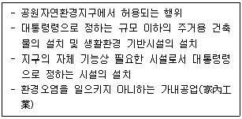
- 공원마을지구
- 공원자연환경지구
- 공원자연보존지구
- 공원문화유산지구
(정답률: 62%)
33. 집을 출발하여 목적지에 도착한 후 그곳에서 2~3개소의 시설을 광범위하게 구경하고 집으로 돌아오는 관광행위의 유형은?
- 옷핀(pin)형
- 스푼(spoon)형
- 피스톤(piston)형
- 탬버린(tambourine)형
(정답률: 54%)
34. 공원녹지 체계를 설명한 것 중 가장 거리가 먼 것은?
- 체계를 구성하는 요소는 하나의 큰 공원이다.
- 가로수나 하천을 공원의 연계요소로 이용한다.
- 다수의 공원을 연계하여 상호간의 관계를 만든다.
- 공원을 보완하는 점적·면적 요소들로서는 호수, 운동장, 광장 등이 있다.
(정답률: 66%)
35. 수요량 예측이 공간의 규모를 결정짓게 되는데, 반대로 계획의 규모가 수용량의 한계를 결정짓기도 한다. 일반적으로 수요량 산출 공식에 해당하지 않는 것은?
- 시계열 모델
- 중력 모델
- 요인분석 모델
- 혼합형 모델
(정답률: 62%)
36. 동질적인 성격을 가진 비교적 큰 규모의 경관을 구분하는 것으로 주로 지형 및 지표 상태에 따라 구분하는 것을 무엇이라고 하는가?
- 경관요소
- 경관유형
- 토지형태
- 경관단위
(정답률: 52%)
37. 도시조경의 목표로서 가장 거리가 먼 것은?
- 친환경적 도시건설
- 친인간적 도시건설
- 아름다운 도시건설
- 교통 편의적 도시건설
(정답률: 66%)
38. 환경심리학에 관한 설명으로 옳지 않은 것은?
- 환경과 인간행위 상호간의 관계성을 연구한다.
- 사회심리학과 공동의 관심분야를 많이 지니고 있다.
- 이론적이고 기초적인 연구에만 관심을 둔다.
- 다소 정밀하지 않더라도 문제해결에 도움이 되는 가능한 모든 연구방법을 사용한다.
(정답률: 80%)
39. 환경영향평가의 어려움에 관한 설명으로 옳지 않은 것은?
- 쾌적함, 아름다움 등의 추상적 가치에 관한 정량적 분석이 어렵다.
- 건설 후에 평가를 하게 되므로 완화대책을 시행하는데 비용이 많이 든다.
- 일정행위로 인해 초래되는 환경적 영향에 대한 과학적 자료가 미흡하다.
- 환경적 영향을 충분히 분석하기 위하여 어느 정도의 자료가 수집되어야 하는가에 대한 지식이 부족하다.
(정답률: 55%)
40. 세계 최초로 지정된 국립공원과 한국 최초로 지정된 국립공원이 바르게 짝지어진 것은?
- 요세미티(yosemite) - 오대산
- 요세미티(yosemite) - 속리산
- 옐로우스톤(yellow stone) - 설악산
- 옐로우스톤(yellow stone) – 지리산
(정답률: 69%)
3과목: 조경설계
41. 균형(Balance)의 원리에 관한 설명으로 옳지 않은 것은?
- 크기가 큰 것은 작은 것보다 시각적 중량감이 크다.
- 거친 질감은 부드러운 질감보다 시각적 중량감이 크다.
- 불규칙적인 형태는 기하학적인 형태보다 시각적 중량감이 크다.
- 밝은 색상이 어두운 색상보다 시각적 중량감이 크다.
(정답률: 68%)
42. 다음 먼셀 기호에 대한 설명에 틀린 것은?
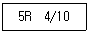
- 명도는 4 이다.
- 색상은 5R 이다.
- 채도는 4/10 이다.
- 5R 4의 10이라고 읽는다.
(정답률: 64%)
43. 자전거도로의 설계에서 “종단경사가 있는 자전거도로의 경우 종단경사도에 따라 연속적으로 이어지는 도로의 최대 길이”를 무엇이라 하는가?
- 편경사
- 정지시거
- 횡단경사
- 제한길이
(정답률: 69%)
44. 다음 색에 관한 설명 중 옳은 것은?
- 파랑 계통은 한색이고, 진출색·팽창색이다.
- 파랑 계통은 난색이고, 후퇴색·팽창색이다.
- 빨강 계통은 난색이고, 진출색·팽창색이다.
- 빨강 계통은 한색이고, 후퇴색·팽창색이다.
(정답률: 71%)
45. 가시광선이 주는 밝기의 감각이 파장에 따라 달라지는 정도를 나타내는 것은?
- 명시도
- 시감도
- 암시도
- 비시감도
(정답률: 47%)
46. 공공을 위한 공원 조성 시 보행동선 계획·설계에 관한 설명으로 틀린 것은?
- 동선은 가급적 단순하고 명쾌해야 한다.
- 상이한 성격의 동선은 가급적 분리시켜야 한다.
- 이용도가 높은 동선은 가급적 길게 해야 한다.
- 동선이 교차할 때에는 가급적 직각으로 교차해야 한다.
(정답률: 54%)
47. 인간 척도의 측면에서 외부공간에서 리듬감을 주고자 할 때 바닥의 재질변화나 고저차는 어느정도 간격으로 하는 것이 가장 효과적인가?
- 10~15m
- 15~20m
- 20~25m
- 25~30m
(정답률: 43%)
48. 위요된 공간에서 혼잡하다고 느낄 때, 이를 완화시키기 위한 공간의 구성으로 틀린 것은?
- 천정을 높인다.
- 적절한 칸막이를 만들어 준다.
- 외부공간으로 시선을 열어준다.
- 장방형의 공간을 정방형으로 만든다.
(정답률: 55%)
49. 조경구성에 있어서 질감(texture)의 특성에 대한 설명으로 옳지 않은 것은?
- 질감은 물체의 부분의 형과 크기의 결과이다.
- 수목의 질감은 주로 잎의 특성과 크기 및 배치에 달려 있다.
- 질감은 관찰자의 떨어진 거리가 영향을 미치지 않는다.
- 질감의 효과는 매끄럽다, 거칠다 등 경험적 촉각에 의하여 감지된다.
(정답률: 72%)
50. 다음 중 “자연적인 형태” 주제에 해당하지 않는 것은?
- 나선형(spiral)
- 유기체적 모서리형(organic edge)
- 불규칙 다각형(irregular polygon)
- 집합과 분열형(clustering and fragmentation)
(정답률: 45%)
51. 다음 중 교차점광장의 결정기준에 해당하지 않는 것은? (단, 도시·군계획시설의 결정·구조 및 설치기준에 관한 규칙을 적용한다.)
- 자동차전용도로의 교차지점인 경우에는 입체 교차방식으로 할 것
- 주민의 사교, 오락, 휴식 및 공동체 활성화 등을 위하여 근린주거구역별로 설치할 것
- 혼잡한 주요도로의 교차점에서 각종 차량과 보행자를 원활히 소통시키기 위하여 필요한 곳에 설치할 것
- 주간선도로의 교차지점인 경우에는 접속도로의 기능에 따라 입체교차방식으로 하거나 교통섬·변속차로 등에 의한 평면교차방식으로 할 것
(정답률: 55%)
52. 설계 도면의 치수를 나타낸 그림 중 가장 나쁘게 표현한 것은?
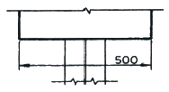
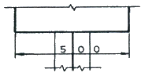
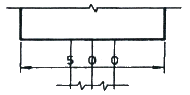
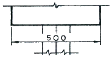
(정답률: 68%)
53. 건축물의 피난·방화구조 등의 기준에 관한 규칙상 다음 설명의 ( ) 안에 적합한 수치는?
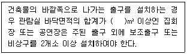
- 250
- 300
- 500
- 600
(정답률: 44%)
54. 다음 중 일반적인 조경설계 과정에 포함되는 사항이 아닌 것은?
- 프로그램 개발
- 조사와 분석
- 개념적인 설계
- 모니터링 설계
(정답률: 62%)
55. 전망대 설치 시 고려사항으로 틀린 것은?
- 전망대의 면적은 1인당 보통 5~7m2가 적당하다.
- 위치는 조망에 유리한 방향을 향하도록 하는 것이 좋다.
- 보안상 안전하고 이용자가 사용하기 좋은 곳을 고려해야 한다.
- 전망대 위치는 능서이나 산 정상보다는 진입로 근처가 바람직하다.
(정답률: 73%)
56. 최근의 환경 설계 분야에서는 과학적 설계에 대한 관삼이 높아지고 있다. 과학적 설계에 관한 설명으로 틀린 것은?
- 과학적 설계연구 자료에 근거하여 설계한다.
- 이용자의 형태, 선호 및 가치를 최대한 고려한다.
- 설계자의 창의력은 임의성이 많으므로 과학적 방법으로 완전히 대체하고자 하는 것이다.
- 설계자의 직관 및 경험에만 의존하지 않고 합리적 접근이 가능한 분야는 과학적 방법을 이용한다.
(정답률: 70%)
57. 다음 그림과 같이 투상하는 방법은?
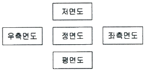
- 제1각법
- 제2각법
- 제3각법
- 제4각법
(정답률: 49%)
58. 설계 시 사용되는 1점 쇄선의 용도가 아닌 것은? (단, 한국산업표준(KS)을 적용한다.)
- 중심선
- 절단선
- 경계선
- 가상선
(정답률: 44%)
59. 어린이미끄럼틀의 미끄럼대에 있어서 일반적인 미끄럼판의 기울기 각도와 폭이 가장 적합하게 짝지어진 것은? (단, 폭은 1인용 미끄럼판을 기준으로 한다.)
- 각도 : 20~30°, 폭 : 20~30cm
- 각도 : 30~35°, 폭 : 40~50cm
- 각도 : 20~30°, 폭 : 40~50cm
- 각도 : 30~40°, 폭 : 20~30cm
(정답률: 61%)
60. 환경색채디자인에서 주의할 점이 아닌 것은?
- 인공 시설물의 색채는 제외시킨다.
- 자연환경과 인공환경의 조화를 고려해야 한다.
- 대상 지역 전체의 색채이미지와 부분의 색채이미지가 잘 조화될 수 있도록 계획한다.
- 외부 환경색채 디자인의 경우 광, 온도, 기후 등 대상지역에 대한 정확한 조사를 바탕으로 색채계획이 이루어져야 한다.
(정답률: 78%)
4과목: 조경식재
61. 다음 중 천근성(淺根性)으로 분류되는 수종은?
- 느티나무(Zelkova serrata)
- 전나무(Abies holophylla)
- 상수리나무(Quercus acutissima)
- 이태리포푸라(Populus davidiana)
(정답률: 54%)
62. 천이(Succession)의 순서가 옳은 것은?
- 나지→1년생초본→다년생초본→음수교목림→양수관목림→양수교목림
- 나지→1년생초본→다년생초본→양수교목림→양수관목림→음수교목림
- 나지→1년생초본→다년생초본→양수관목림→양수교목림→음수교목림
- 나지→다년생초본→1년생초본→양수관목림→양수교목림→음수교목림
(정답률: 65%)
63. '개체군내에는 최적의 생장과 생존을 보장하는 밀도가 있다. 과소 및 과밀은 제한 요인으로 작용한다.'가 설명하고 있는 원리는?
- Gause의 원리
- Allee의 원리
- 적자생존의 원리
- 항상성의 원리
(정답률: 62%)
64. 포장지역에 식재한 독립 교목은 태양열 및 인적 피해로부터의 보호와 미관을 고려하여 수간에 매년 새끼 등 수간보호재 감기를 실시하여야 한다. 이 경우 지표로부터 약 몇 m 높이까지 감아야 하는가?
- 1.0m
- 1.5m
- 2.0m
- 2.6m
(정답률: 64%)
65. 가로수의 식재 방법으로 옳지 않은 것은?
- 식재구덩이의 크기는 너비를 뿌리분 크기의 1.5배 이상으로 한다.
- 분의 지름은 근원경의 2~3배로해서 분뜨기를 한다.
- 지주 설치 기간은 뿌리 발육이 양호해질 때까지 약 1~2년간 설치해 둔다.
- 식재지의 일정용량 중 토양입자 50%, 수분 25%, 공기 25%의 구성비를 표준으로 한다.
(정답률: 48%)
66. 추식구근(秋植球根)에 해당하지 않는 것은?
- 아마릴리스(Amaryllis)
- 아네모네(Anemone)
- 히아신스(hyacinth)
- 라넌큘러스(Ranunculus)
(정답률: 33%)
67. 다음 설명에 적합한 수종은?
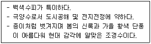
- 서어나무(Carpinus laxiflora)
- 박달나무(Betula schmidtii)
- 개암나무(Corylus heterophylla)
- 자작나무(Betula platyphylla var. japonica)
(정답률: 72%)
68. 사실적(寫實的) 식재와 가장 관련이 없는 것은?
- 다수의 수목을 규칙적으로 배식
- 실제로 존재하는 자연경관을 묘사
- 고산식물을 주종으로 하는 암석원(rock garden)
- 월리엄 로빈슨이 제창한 야생원(wild graden)
(정답률: 68%)
69. 개울가, 연못 가장자리 등 습윤지에서 잘 자라는 수종이 아닌 것은?
- 낙우송(Taxodium distichum)
- 능수버들(Salix pseudolasiogyne)
- 오리나무(Alnus japonica)
- 향나무(Juniperus chinensis)
(정답률: 65%)
70. 숲의 층위에 해당하지 않는 것은?
- 만경류층
- 초본층
- 관목층
- 아교목층
(정답률: 70%)
71. 다음 중 자동차 배기가스에 가장 강한 수종은?
- 은행나무(Ginkgo biloba)
- 전나무(Abies holophylla)
- 자귀나무(Albizia julibrissin)
- 금목서(Osmanthus fragrans var. aurantiacus)
(정답률: 71%)
72. 식재구성에서 색채와 관련된 이론으로서 옳지 않은 것은?
- 경관마다 우세한 것과 종속적인 요소를 결정하여 조성하여야 한다.
- 색의 변화는 연속성을 파괴하지 않도록 점진적인 단계를 두어야 한다.
- 밝고 선명한 색채는 희미하고 연한 색체에 비하여 고운 질감을 지닌다.
- 정원에서 휴식과 평화로운 분위기를 주도록 잎의 녹색은 관목의 꽃보다 더욱 중요하게 취급된다.
(정답률: 59%)
73. 장미과 식물 중 속(Genus) 분류가 다른 것은?
- 산돌배
- 콩배나무
- 아그배나무
- 위봉배나무
(정답률: 56%)
74. 중앙분리대 식재 시 차광효과가 가장 큰 수종으로만 나열된 것은?
- 아왜나무, 돈나무
- 광나무, 소사나무
- 사철나무, 쉬땅나무
- 생강나무, 병아리꽃나무
(정답률: 58%)
75. 다음 설명에 해당되는 수목은?
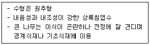
- 개잎갈나무(Cedrus deodara)
- 자목련(Magnolia liliiflora)
- 주목(Taxus cuspidata)
- 단풍나무(Acer palmatum)
(정답률: 64%)
76. 기수1회 우상복엽의 잎 특성을 가진 수종이 아닌 것은?
- 물푸레나무(Frazinus fhynchophylla)
- 아카시나무(Robinia pseudoacacia)
- 자귀나무(Albizia julibrissin)
- 쉬나무(Rutaceae daniellii)
(정답률: 34%)
77. 식물의 화아분화가 가장 잘 될 수 있는 조건은?
- 식물체내의 N 성분이 많을 때
- 식물체내의 K 성분이 많을 때
- 식물체내의 P 성분이 많을 때
- 식물체내의 C/N율이 높을 때
(정답률: 46%)
78. 토양을 개선하기 위해 사용되는 부식(humus)의 특성으로 옳지 않은 것은?
- 토양의 용수량을 증대시키고 한발을 경감시킨다.
- 보비력이 강하고 배수력과 보수력이 강하다.
- 미생물의 활동을 활발하게 하며 유기물의 분해를 촉진시킨다.
- 토양을 단립(單粒)구조로 만들고, 토양의 물리적 성질을 약화시킨다.
(정답률: 63%)
79. 흰말채나무(Cornus alba L.)의 특징으로 틀린 것은?
- 노란색의 열매가 특징적이다.
- 층층나무과(科)로 낙엽활엽관목이다.
- 수피가 여름에는 녹색이나 가을, 겨울철의 붉은 줄기가 아름답다.
- 잎은 대상하며 타원형 또는 난상타원형이고, 표면에 작은 털, 뒷면은 흰색의 특징을 갖는다.
(정답률: 52%)
80. 팥배나무의 종명에 해당하는 것은?
- myrsinaefolia
- Alnus
- Sorbus
- alnifolia
(정답률: 43%)
5과목: 조경시공구조학
81. 다음 중 콘크리트의 혼화재료에 속하지 않는 것은?
- 타르
- AE제
- 포졸란
- 염화칼슘
(정답률: 50%)
82. 그림과 같은 지형을 평탄하게 정지작업을 하였을 때 평균 표고는?
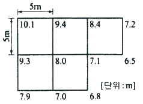
- 7.973m
- 8.000m
- 8.027m
- 8.104m
(정답률: 46%)
83. 관거의 유속과 유량에 대한 설명이 틀린 것은?
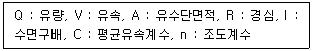
 가 성립된다.
가 성립된다. 가 성립된다.
가 성립된다. 가 성립된다.
가 성립된다.- A·C·I 가 일정하면 경심이 최대일 때 유량은 최대가 될 수 없다.
(정답률: 55%)
84. 도면에서 곡선으로 된 자연지형 부분의 면적을 구하기에 가장 적합한 방법은?
- 모눈종이법에 의한 방법
- 배횡거법에 의한 방법
- 지거법에 의한 방법
- 구적기에 의한 방법
(정답률: 56%)
85. 다음 시공관리에 대한 설명이 틀린 것은?
- 시공관리의 3대 목표는 공정관리, 품질관리, 원가관리이다.
- 발주자는 최소의 비용으로 최대의 생산을 올리고자 한다.
- 품질과 원가와의 관계는 품질을 좋게 하면 원가는 높아지는 경향이 있다.
- 공사의 품질 및 공기에 대해 계약조건을 만족하면서 능률적이고 경제적 시공을 위한 것이다.
(정답률: 45%)
86. 다음 설명에 적합한 도로의 폭원 요소는?
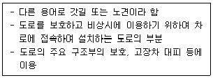
- 길어깨(shouler)
- 보도(pedestrian way)
- 중앙분리대(median strip)
- 노상시설대(street strip)
(정답률: 72%)
87. 네트워크 공정표의 특징으로 가장 거리가 먼 것은?
- 작성 및 검사에 특별한 기능이 요구된다.
- 작업순서와 상호관계의 파악이 용이하다.
- 계획의 단계에서 만든 여러 데이터의 수집이 가능하다.
- 변경에 대해 전체적인 영향을 받지 않아 공정표의 수정이 대단히 용이하다.
(정답률: 59%)
88. 시공도면 작성 시 아래와 같은 표시는 일반적으로 무엇을 의미하는가?
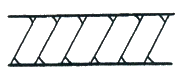
- 지반
- 잡석다짐
- 석재
- 벽돌벽
(정답률: 59%)
89. 비탈면에 잔디를 식재하는 방법이 틀린 것은?
- 비탈면 줄떼다지기는 잔디폭이 0.1m 이상 되도록 한다.
- 잔디고정은 떼꽂이를 사용하여 잔디 1매당 2개 이상 견실하게 고정한다.
- 비탈면 전면(평떼)붙이기는 줄눈을 일정한 틈을 벌려 십자줄이 되도록 붙인다.
- 잔디시공 후에는 모래나 흙으로 잔디붙임면을 얇게 덮은 후 고루 두들겨 다져준다.
(정답률: 62%)
90. 콘크리트의 크리프(creep)에 대한 설명으로 틀린 것은?
- 작용응력이 클수록 크리프는 크다.
- 재하재령이 빠를수록 크리프는 크다.
- 물시벤트비가 작을수록 크리프는 크다.
- 시멘트페이스트가 많을수록 크리프는 크다.
(정답률: 51%)
91. 다음 중 점토의 특성으로 옳지 않은 것은?
- 주성분은 규산 50~70%, 알루미나 15~35%, 기타 MgO, K2O, Na2O3가 포함되어 있다.
- 암석이 풍화된 세립(細粒)으로 습한상태에서 소성이 크다.
- 비중은 3.0~3.5정도이고 알루미나 성분이 많은 점토의 비중은 3.0 내외이다.
- 양질의 점토일수록 가소성이 좋다.
(정답률: 30%)
92. 비탈면 안정자재에 대한 설명이 틀린 것은?
- 부착망은 체인링크철선과 염화비닐피복철선의 기준에 합당한 제품을 사용해야 한다.
- 낙석방지철망은 부식성이 있고 충격이나 식물뿌리의 번성에 따라 자연 변형되는 강도를 갖춘 것을 채택한다.
- 격자틀 및 블록제품을 접합구가 일체식으로 연결될 수 있어야 하며, 녹화식물의 생육최 소심도 이상의 토심이 확보될 수 있도록 설계한다.
- 비탈안정녹화공사용 격자틀 등의 합성수지 제품은 내부식성이 있고 변형 및 탈색이 되지 않으며 자연미가 나도록 제작된 것을 채택한다.
(정답률: 55%)
93. 8ton 덤프트럭에 자연상태의 사질양토를 굴착 후 적재하려 한다. 덤프트럭의 1회 적재량은? (단, 사질양토 단위중량 : 1700kg/m3, L = 1.25, C = 0.85, 소수 2째 자리에서 반올림한다.)
- 5.9 m3
- 4.7 m3
- 4.0 m3
- 5.0 m3
(정답률: 31%)
94. 다음 설명에 적합한 심토층 배수의 유형은?
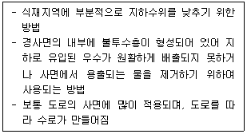
- 차단법(intercepting system)
- 자연형(natural type) 배치
- 완화 배수(relief drainage)
- 즐치형(gridiron type) 배치
(정답률: 39%)
95. 다음 조경재료의 역학적 성질 중 “단단한 정도”를 나타내는 용어는?
- 연성(ductility)
- 인성(toughness)
- 취성(brittleness)
- 경도(hardness)
(정답률: 71%)
96. 계획오수량 산정시 고려사항으로 틀린 것은?
- 지하수량은 1인1일 최대 오수량의 10~20%로 한다.
- 계획 1일 평균 오수량은 계획 1일 최대 오수량의 70~80%를 표준으로 한다.
- 계획 시간 최대 오수량은 계획 1일 최대 오수량의 1시간당 수량의 1.3~1.8배를 표준으로 한다.
- 합류식에서 우천 시 계획 오수량은 원칙적으로 계획시간 최대오수량의 3배 이하로 한다.
(정답률: 44%)
97. P가 그림과 같이 AB부재에 작용할 때 A, B점에 발생하는 반력(RA, RB)은 각각 얼마인가?
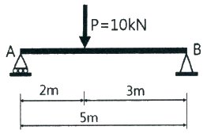
- RA : 6kN, RB : 4kN
- RA : 4kN, RB : 6kN
- RA : 2kN, RB : 8kN
- RA : 8kN, RB : 2kN
(정답률: 36%)
98. 노외주차장 또는 노상주차장의 구조·설비기준이 틀린 것은?
- 노상주차장은 너비 6미터 미만의 도로에 설치하여서는 아니 된다.
- 노외주차장에는 주차구획선의 긴 변과 짧은 변 중 한 변 이상이 차로에 접하여야 한다.
- 노외주차장의 출구와 입구에서 자동차의 회전을 쉽게 하기 위하여 필요한 경우에는 차로와 도로가 접하는 부분을 곡선형으로 하여야 한다.
- 노외 및 노상 주차장에서 60° 주차방식이 동일 면적에 토지이용의 효율성이 가장 높다.
(정답률: 60%)
99. 콘크리트 배합(mix proportion) 중 실제 현장골재의 표면수·흡수량 및 입도상태를 고려하여 시방배합을 현장상태에 적합하게 보정하는 배합은?
- 현장배합(job mix)
- 용적배합(volume mix)
- 중량배합(weight mix)
- 계획배합(specified mix)
(정답률: 68%)
100. 건설공사 표준품셈의 수량계산 기준이 틀린 것은?
- 절토(切土)량은 자연상태의 설계도의 양으로 한다.
- 수량의 계산은 지정 소수의 이하 1위까지 구하고, 끝수는 4사5입 한다.
- 철근 콘크리트의 경우 철근 양 만큼 콘크리트 양을 공제한다.
- 곱하거나 나눗셈에 있어서는 기재된 순서에 의하여 계산하고, 분수는 약분법을 쓰지 않는다.
(정답률: 54%)
6과목: 조경관리론
101. 유효인산과 결합하여 식물에 대한 인산의 유효도를 떨어뜨리는 원소는?
- K
- Mg
- Fe
- Cu
(정답률: 37%)
102. 농약을 안전하게 사용하도록 용기색으로 농약의 종류를 구분한다. 농약 종류에 따른 지정색의 연결이 틀린 것은?
- 살충제 - 녹색
- 살균제 - 분홍색
- 생장조정제 - 청색
- 비선택성 제초제 – 노란색
(정답률: 47%)
103. 다음 중 유기물의 탄소와 질소 함량을 비교해 볼 때 가장 빨리 분해가 될 수 있는 것은?
- 탄소 : 50.7%, 질소 : 2.20%
- 탄소 : 50.0%, 질소 : 0.30%
- 탄소 : 44.0%, 질소 : 1.50%
- 탄소 : 50.0%, 질소 : 5.00%
(정답률: 49%)
104. 조경수목 유지관리 작업 계획 시 정기적인 작업으로 분류하기 가장 어려운 것은?
- 전정
- 시비
- 병해충 방제
- 관수
(정답률: 56%)
1⑤. 천공성 해충인 소나무좀의 월동 충태는?
- 알
- 유충
- 번데기
- 성충
(정답률: 39%)
106. 생태연못의 유지관리 사항으로 옳지 않은 것은?
- 모니터링은 최소 조성 10년 후부터 3개년 주기로 실시한다.
- 모니터링은 가급적 지역주민, NGO, 전문가 등이 함께 참여하도록 한다.
- 물순환시스템이 지속적으로 유지될 수 있도록 유입구와 유출구를 주기적으로 청소한다.
- 습지식물이 지나치게 번성하였을 경우에는 부수식물이 차지하는 면적이 수면적의 1/3이하가 되도록 식물 하단부(뿌리부근)에 차단막을 설치하거나 수시로 제거해 준다.
(정답률: 55%)
107. 수목의 병해충 구제 방법이 아닌 것은?
- 기계적 방법
- 화학적 방법
- 식생적 방법
- 생물학적 방법
(정답률: 60%)
108. 요소의 성질을 나타낸 설명이 옳은 것은?
- 분자식은 CO(NH4)2이다.
- 타 질소질 비료에 비해 고온에서 흡습성이 높다.
- 산(acid)과 함께 가열하면 우레탄이 만들어진다.
- 알칼리와 함께 가열하면 완전히 분해되어 암모늄염과 이산화탄소가 된다.
(정답률: 36%)
109. 수목병과 매개충의 연결이 옳지 않은 것은?
- 느릅나무 시들음병 - 나무좀
- 쥐똥나무 빗자루병 - 마름무늬매미충
- 오동나무 빗자루병 - 담배장님노린재
- 대추나무 빗자루병 – 담배장님노린재
(정답률: 51%)
110. 식물관리비의 산정식으로 옳은 것은?
- 식물의 수량×작업률×작업횟수×작업단가
- (식물의 수량×작업률)÷(작업횟수×작업단가)
- (식물의 수량×작업률×작업횟수)÷작업단가
- 식물의 수량÷(작업률×작업횟수×작업단가)
(정답률: 51%)
111. 목재에 사용되는 방부제의 성능 기준의 항목으로 가장 거리가 먼 것은?
- 휘산성
- 흡습성
- 철부식성
- 침투성
(정답률: 45%)
112. 토양수를 흡습수, 모세관수, 중력수로 구분하는 기준은?
- 토양중의 수분함량
- 대기로의 수분증발력
- 토양입자와 수분의 장력
- 토양수분의 중력에 견디는 힘
(정답률: 59%)
113. 콘크리트 포장의 부분 보수를 위한 콘크리트 포설작업이 불가능한 기온은 몇 ℃ 이하 인가? (단, 감독자가 승인한 경우 이외에는 공사를 진행하여서는 안 된다.)
- 10℃
- 8℃
- 6℃
- 4℃
(정답률: 60%)
114. 다음 중 공원이용 관리시의 주민참가를 위한 조건으로 볼 수 없는 것은?
- 이해의 조정과 공평성을 가질 것
- 주민참가 결과의 효과가 기대될 것
- 행정당국의 지침에 수동적으로 참여할 것
- 규모 및 전문성이 주민의 수탁능력을 넘지 않을 것
(정답률: 68%)
115. 조경관리 계획 수립 시 작업별 1일당 소요인원을 산출할 경우 기초자료로 활용될 수 있는 내용으로만 구성된 것은?
- 단위작업률, 미래의 예상실적, 작업능률
- 연간작업량, 단위작업률, 과거의 실적
- 연간작업량, 미래의 예상실적, 작업능률
- 연간작업량, 단위작업률, 작업능률
(정답률: 44%)
116. 녹지(綠地) 표면에 물이 고여 정체하고 있어 식물생육에 피해를 주고 있을 경우 대처해야 할 관리방법으로 가장 부적합한 것은?
- 암거(暗渠)를 매설한다.
- 지하수위를 높여 준다.
- 표토를 그레이딩(Grading)한다.
- 표토의 토성(土性) 및 구조(構造)를 개량한다.
(정답률: 65%)
117. 수목 병의 주요한 표징 중 영양기관에 의한 것은?
- 포자(胞子)
- 균핵(菌核)
- 자낭각(子囊殼)
- 분생자병(分生子炳)
(정답률: 54%)
118. 병원체의 월동방법 중 기주(基主)의 체 내에 잠재하여 월동하는 것은?
- 잣나무 털녹병균
- 오리나루 갈색무늬병
- 묘목의 모잘록병[苗立枯病]균
- 밤나무 뿌리혹병[根頭癌腫病]균
(정답률: 44%)
119. 다음 중 암발아 잡초에 해당하는 것은?
- 광대나물
- 바랭이
- 쇠비름
- 향부자
(정답률: 35%)
120. 교차보호(cross protection)란 무엇인가?
- 살균제를 이용하여 해충을 방제하는 것
- 살균제와 살충제를 혼용하여 병과 해충을 동시에 방제하는 것
- 동일한 영농집단 내에서 병방제, 해충방제 등으로 업무를 분담하는 것
- 약독 계통의 바이러스를 이용하여 강독 계통의 바이러스 감염을 예방하는 것
(정답률: 32%)